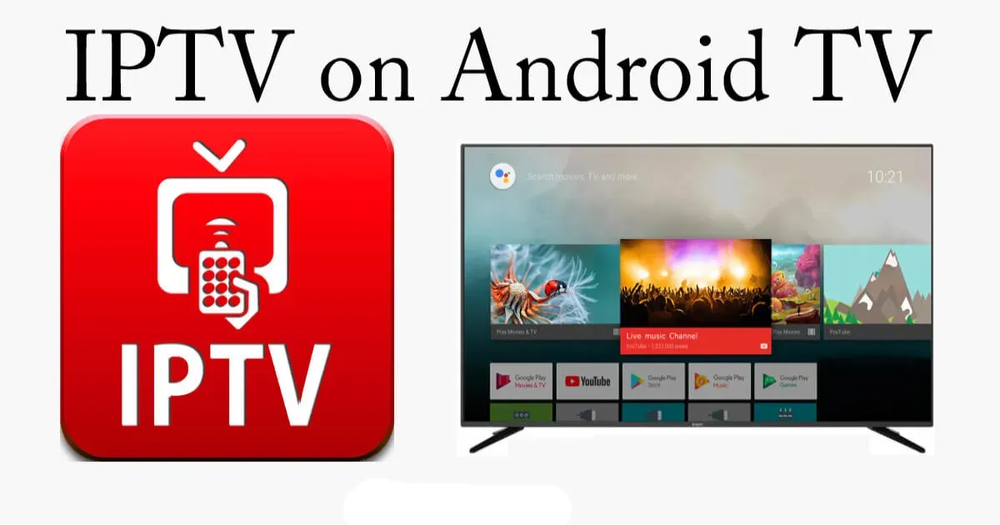
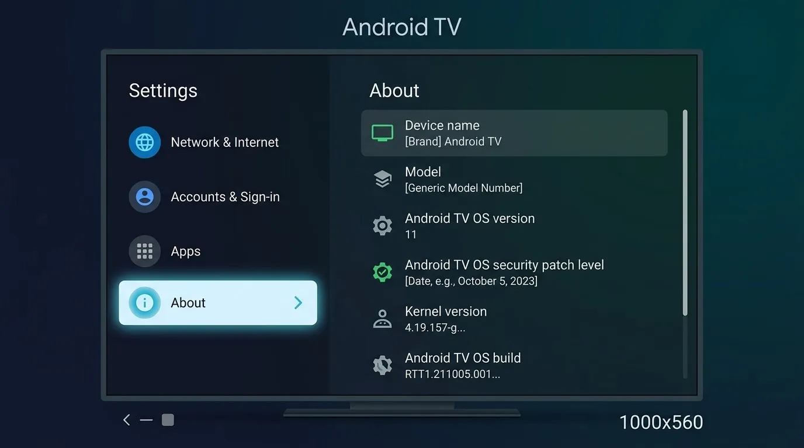
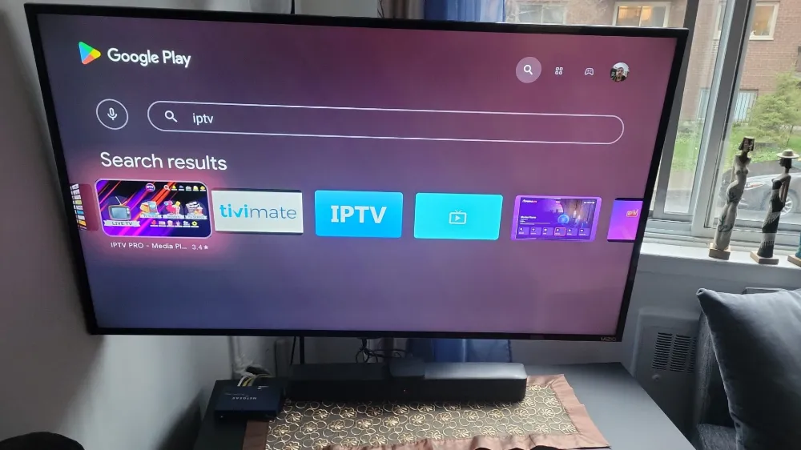
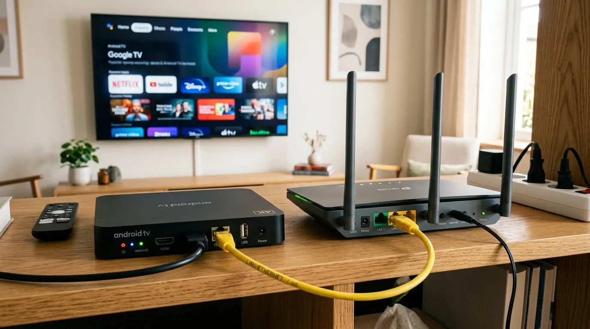

How to Set Up IPTV on Android TV

Android TV and Google TV are among the most flexible platforms for IPTV. The Google Play Store has well-known players, and the remote-friendly interface suits live television. This guide covers any Android TV box, Smart TV or streaming device that runs the platform.
Get the device ready
Connect to your network and sign in with a Google account. Open Settings, System, About, and install any pending software update.

Install a player
- Open the Google Play Store on the TV.
- Search for a player such as TiviMate or IPTV Smarters.
- Select Install, then Open.
- Choose how to add your source: playlist URL, Xtream-style login, or a file.
Pick an input method
A playlist URL is the easiest if your provider gives you one. Understand the format in our M3U guide.

Tune for smooth playback
- Prefer Ethernet. If you must use Wi-Fi, use the 5 GHz band.
- Clear the app cache from Settings, Apps if it becomes slow.
- Disable battery-saver or background limits on box devices.

Next steps
Check your connection against the speed guide and learn the basics in what IPTV is.
Frequently asked questions
Is Android TV better than Firestick for IPTV?
Both work well. Android TV has direct Google Play access, while Firestick is usually cheaper.
What if the Play Store lacks the player?
Use the developer's official download method or choose another player that is available.
Do I need a paid player app?
Some players have free versions with optional paid features.